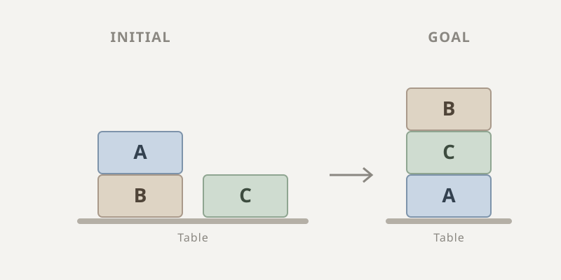

Mini project 3 · CMU 16-782
Mini project 3 · CMU 16-782
Symbolic planning.
Planning over logical conditions rather than coordinates. The state is a set of facts, the actions are rules with preconditions and effects, and the search runs over the space of worlds those rules can reach.
A different kind of planning
The other two planning projects search over geometry: grid cells, or arm configurations. This one searches over logic. A state is a set of true conditions, an action is a rule with preconditions that must hold and effects that add or delete conditions, and planning means finding the sequence of actions that turns the initial set of facts into one containing the goal.
The Blocks domain is the classic example: blocks on a table, an action to move a block onto another, an action to move it back to the table, and preconditions enforcing that you can only move something with nothing on top of it.

Grounding the actions
The actions above are templates with free variables. Before search can happen they have to be grounded, meaning every valid assignment of real symbols to those variables has to be enumerated.
I precomputed the permutations of symbols based on the maximum number of arguments any
action requires, storing them in a vector<list<list<string>>>
where each entry holds the permutations for n variables. From those I generate every
possible grounded action, each with its grounded preconditions and effects, and store them
in a list. Search then simply walks that list, applying whichever actions have satisfied
preconditions in the current state.
One bug is worth recording because of how it presented. Initially I was not checking whether a newly generated state already existed in the expanded list. On the small Blocks domain that merely wasted work; on the Fire Extinguisher environment it ran indefinitely, because the planner kept regenerating states it had already seen and never exhausted its frontier. Adding the duplicate check fixed it.
Results
Once the goal state is reached, the plan is recovered by backtracking through each state's parent and the grounded action that produced it. The three domains produce plans of increasing length: 3 actions for Blocks, 6 once triangles are added, and 21 for the fire extinguisher.
Does the heuristic help?
The heuristic is simple: count the conditions in the goal state that are not present in the
current state, with all edge costs set to 1, then run ordinary A*. I benchmarked each
domain with and without it, compiled both normally and with -Ofast.
The heuristic helps everywhere, but the size of the win varies enormously, and the reason is the interesting part. On Blocks and Triangles it is the difference between 68 states and 740, which is 50.8 seconds against 0.53, a roughly 96x speedup.
On Fire Extinguisher it barely matters: 339 states against 365. That is not because the domain is easy but because the heuristic carries almost no information there. That environment has exactly one condition in its goal, so the heuristic value is always 1 until the goal is met, which makes the search nearly indistinguishable from running with no heuristic at all. A heuristic that cannot discriminate between states cannot guide anything.
What would work better
Since this heuristic can either overestimate or underestimate how far the current state is from the goal, a heuristic computed by a forward Dijkstra search would be far better guided and would expand far fewer states. The catch is that it requires a Dijkstra search per expanded state, so whether it pays depends on the size of the environment. For very large environments the cost of expanding a huge number of states dominates, and the more informed heuristic wins. For smaller ones a simple heuristic makes more sense, since the state expansions are cheap relative to running repeated Dijkstra searches.